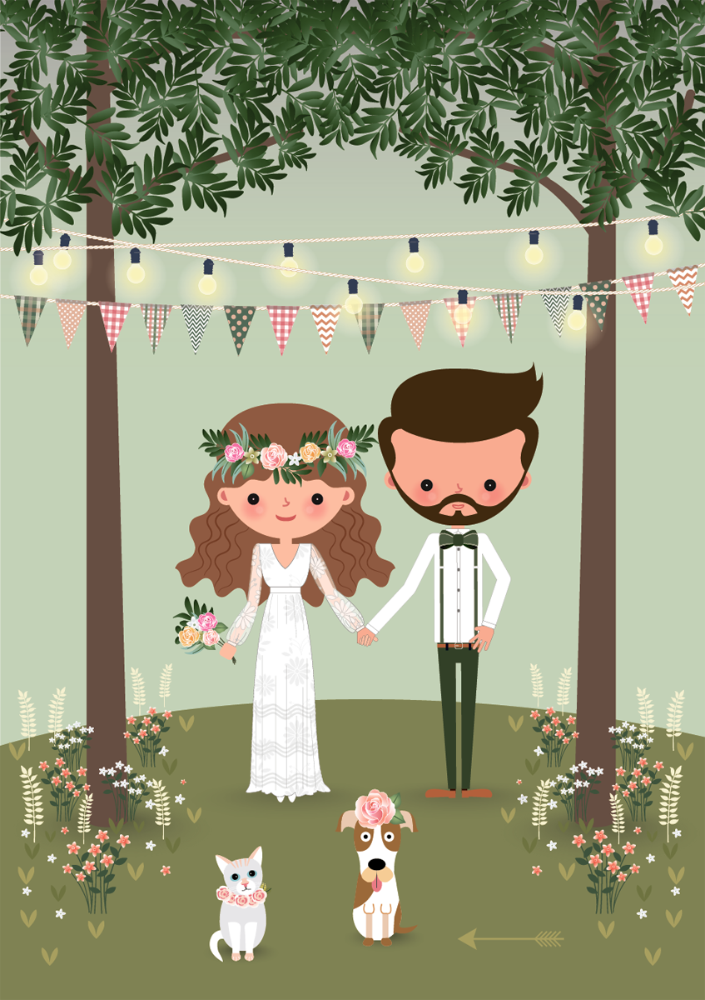

Spot the Differences 6: Wedding
Sorry! But JavaScript is obviously disabled, forbidden and prohibited in your browser ;)

Отличий
найдено
0
Подсказок
осталось
3
Поздравляем!
Вы нашли все отличия!
Developer:
WIN-button